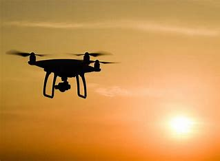

Kratos 5.0 drone
Experience the thrill of high-definition aerial photography and cutting-edge technology with our state-of-the-art drone. Elevate your adventures and capture breathtaking moments – add this extraordinary drone to your cart now!
Price: €499.99
➕ Add to Cart
Specifications
- Camera: 4K HD Camera
- Flight Time: Up to 60 minutes
- Range: 500 meters
- Max Speed: 50 mph
- GPS: Yes
- Night Vision: Yes
Additional Information
Engineered with aerospace-grade materials and fortified by robust construction, our drone exemplifies exceptional durability and strength, capable of withstanding challenging conditions and ensuring reliable performance for your every adventure.

Equipped with advanced night vision technology and precision navigation systems, our cutting-edge drone is exceptionally capable of effortlessly soaring through pitch-black skies, ensuring unparalleled performance and visibility even in the darkest environments.